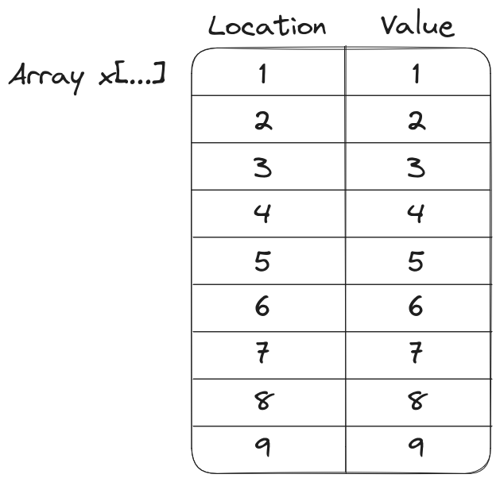
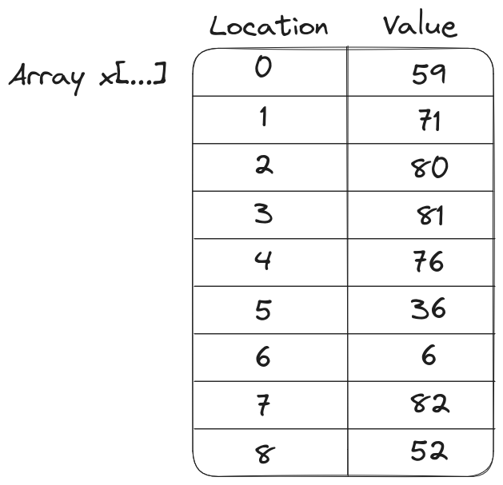
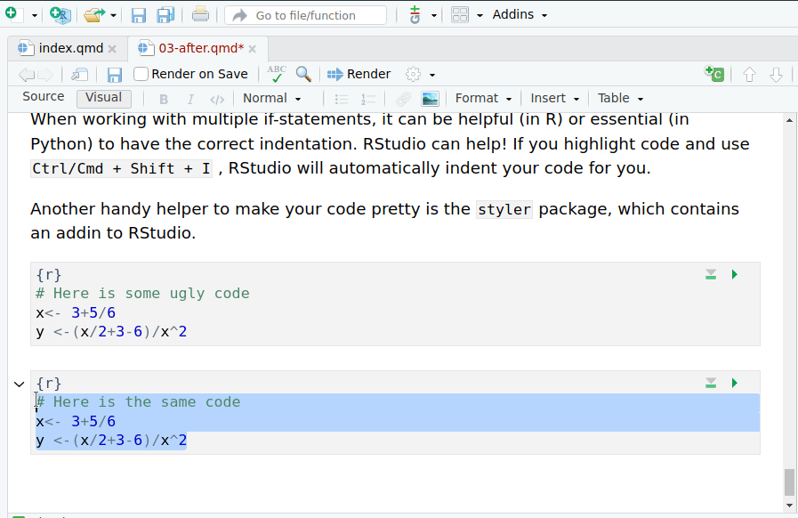

import pandas as pd
import numpy as np
from random import choicesHomework 3 Discoveries
HW
I almost always learn something new from your homework assignments. It seemed like a good time to start writing some of this down, so that I can share the wealth.
I’ve also included a few common mistakes that multiple people made (mostly in indexing).
Let’s start by loading a few packages in python:
Error Handling
This is by far the thing that most of you struggled with, which is fair - it’s an advanced concept, and there are many ways to do it, and we’re not really far enough yet for you to fully understand how this is happening or how the logic works. It’s the kind of “stretch” question I add to push those of you who come into this class with a bit more experience programming.
Y’all found a number of ways I hadn’t found to do testing, especially in Python. I thought I’d highlight a couple of areas where I learned a few things.
Python - raise TypeError()
At first, I had some trouble understanding why some python code just didn’t work:
import pandas as pd
import numpy as np
from random import choices
def fizzbuzz(x):
y = [np.nan]*len(x) # this just defines something to return
for i in range(len(x)):
# Check that the entry is numeric
if not (isinstance(x[i], int) or isinstance(x[i], float)):
raise TypeError("Input must be an integer")
elif x[i]%3==0 and x[i]%5==0:
y[i] = "FizzBuzz"
elif x[i]%3==0:
y[i] = "Fizz"
elif x[i]%5==0:
y[i] = "Buzz"
else:
y[i] = x[i]
return y
fizzbuzz(np.array([1, 3]))Input must be an integerfizzbuzz(np.array([1, 'a']))Input must be an integerIsn’t np.array([1,2]) either an integer or a float?
x = np.array([1,2])
type(x[0])<class 'numpy.int64'>Evidently not - it’s a special numpy variable type, np.int64. Let’s incorporate that into our function:
import pandas as pd
import numpy as np
from random import choices
def fizzbuzz(x):
y = [np.nan]*len(x) # this just defines something to return
for i in range(len(x)):
# Check that the entry is numeric
if not (isinstance(x[i], int) or isinstance(x[i], float) or isinstance(x[i], np.int64)):
raise TypeError("Input must be an integer")
elif x[i]%3==0 and x[i]%5==0:
y[i] = "FizzBuzz"
elif x[i]%3==0:
y[i] = "Fizz"
elif x[i]%5==0:
y[i] = "Buzz"
else:
y[i] = x[i]
return y
fizzbuzz(np.array([1, 3]))[1, 'Fizz']fizzbuzz(np.array([1, 'a']))Input must be an integerNow, we should be able to assume that in a vector, everything has the same type. So in theory we should be able to improve this function still. Let’s check out the documentation for basic types in numpy:
To determine the type of an array, look at the dtype attribute:
z.dtype
dtype('uint8')dtype objects also contain information about the type, such as its bit-width and its byte-order. The data type can also be used indirectly to query properties of the type, such as whether it is an integer:
d = np.dtype(int)d
dtype('int32')np.issubdtype(d, np.integer)
Truenp.issubdtype(d, np.floating)
FalseI learned a couple of things from this documentation - first, we can test data types using the np.isdtype function, and second, we can use np.issubdtype to test for variations on those types, like int64, int32, and int.
Ok, so let’s see if we can apply this information to our problem and test the whole array x outside of the loop:
def fizzbuzz(x):
# Check that the parameter is numeric
if not(np.issubdtype(x.dtype, np.integer) or np.issubdtype(x.dtype, np.floating)):
raise TypeError("Input must be a number")
y = [np.nan]*len(x) # this just defines something to return
for i in range(len(x)):
if x[i]%3==0 and x[i]%5==0:
y[i] = "FizzBuzz"
elif x[i]%3==0:
y[i] = "Fizz"
elif x[i]%5==0:
y[i] = "Buzz"
else:
y[i] = x[i]
return y
fizzbuzz(np.array([1, 3]))[1, 'Fizz']fizzbuzz(np.array([1, 'a']))Input must be a numberfizzbuzz(np.array([1, 2.43]))[1.0, 2.43]Python - try/except
Here is some beautiful code that worked exactly the way I intended:
def fizzbuzz(x):
y = [np.nan]*len(x)
try:
for i in range(len(x)):
if x[i] % 3 == 0 and x[i] % 5 == 0:
y[i] = "FizzBuzz"
elif x[i] % 3 == 0:
y[i] = "Fizz"
elif x[i] % 5 == 0:
y[i] = "Buzz"
else:
y[i] = (x[i])
except TypeError:
print("Error: Should be a numeric value")
return y
import pandas as pd
from random import choices
xx = "abc"
yy = fizzbuzz(x = xx)Error: Should be a numeric valueres = pd.DataFrame({"x": xx, "result": yy})
res x result
0 abc NaN
1 abc NaN
2 abc NaNxx2 = np.array(choices(range(100), k = 10)) + 1
yy2 = fizzbuzz(x = xx2)
res2 = pd.DataFrame({"x": xx2, "result": yy2})
res2 x result
0 99 Fizz
1 24 Fizz
2 45 FizzBuzz
3 31 31
4 10 Buzz
5 94 94
6 94 94
7 56 56
8 28 28
9 33 FizzThis code handles everything with an error, but still returns a reasonable result at the end. Very nice.
Indexing
In both R and Python, a common error (so common I didn’t even take off points for it this time) was that you assumed that x = 1:30, and used x as both a value and an index (location).

In this situation, you can use a for loop that says
x = 1:9
for(i in x) {
print(x[i])
}[1] 1
[1] 2
[1] 3
[1] 4
[1] 5
[1] 6
[1] 7
[1] 8
[1] 9with no real problems.
However, you don’t always know that your x is going to have sequential numbers - that the location and the value are going to be the same. Consider instead this x:

x = c(59, 71, 80, 81, 76, 36, 6, 82, 52)
for(i in x) {
print(paste(i, ":", as.character(x[i])))
}[1] "59 : NA"
[1] "71 : NA"
[1] "80 : NA"
[1] "81 : NA"
[1] "76 : NA"
[1] "36 : NA"
[1] "6 : 36"
[1] "82 : NA"
[1] "52 : NA"(I’m honestly surprised this code runs without an error - it probably shouldn’t).
Here, we need to use a different method to access the values by location.
We can either explicitly spell out the vector 1:length(x):
x = c(59, 71, 80, 81, 76, 36, 6, 82, 52)
for(i in 1:length(x)) {
print(paste(i, ":", as.character(x[i])))
}[1] "1 : 59"
[1] "2 : 71"
[1] "3 : 80"
[1] "4 : 81"
[1] "5 : 76"
[1] "6 : 36"
[1] "7 : 6"
[1] "8 : 82"
[1] "9 : 52"or, we can use the built-in function seq_along(x), which does that same task within a function:
for(i in seq_along(x)) {
print(paste(i, ":", as.character(x[i])))
}[1] "1 : 59"
[1] "2 : 71"
[1] "3 : 80"
[1] "4 : 81"
[1] "5 : 76"
[1] "6 : 36"
[1] "7 : 6"
[1] "8 : 82"
[1] "9 : 52"
In this situation, you can use a for loop that says
x = np.array(range(10))
for i in x:
print(x[i])0
1
2
3
4
5
6
7
8
9with no real problems.
However, you don’t always know that your x is going to have sequential numbers - that the location and the value are going to be the same. Consider instead this x:

x = np.array([59, 71, 80, 81, 76, 36, 6, 82, 52])name 'np' is not definedfor i in x:
print("i = " + str(i) + ": " + str(x[i]))name 'x' is not definedHere, we need to use a different method to access the values by location.
We can either explicitly spell out the vector range(len(x)):
x = np.array([59, 71, 80, 81, 76, 36, 6, 82, 52])
for i in range(len(x)):
print("i = " + str(i) + ": " + str(x[i]))i = 0: 59
i = 1: 71
i = 2: 80
i = 3: 81
i = 4: 76
i = 5: 36
i = 6: 6
i = 7: 82
i = 8: 52or, we can use the built-in function enumerate(x), which does that same task. Python uses multiple-assignment, so we can simultaneously assign i, the location, and xx, the value, using enumerate().
x = np.array([59, 71, 80, 81, 76, 36, 6, 82, 52])
for i, xx in enumerate(x):
print("i = " + str(i) + ": " + str(xx))i = 0: 59
i = 1: 71
i = 2: 80
i = 3: 81
i = 4: 76
i = 5: 36
i = 6: 6
i = 7: 82
i = 8: 52Basically, as long as you’re careful to distinguish between the location and the value, you can use many different methods to complete this task successfully.
Logical Operators in Python
Evidently, there is a difference between & and and in Python. Let’s examine the distinctions.
# They perform the same on logical comparisons
True & TrueTrueTrue and TrueTrueTrue & FalseFalseTrue and FalseFalseFalse & TrueFalseFalse and TrueFalseFalse & FalseFalseFalse and FalseFalseHowever, there is a difference between the two operators when we look at non-binary things. In binary logic, anything that is nonzero is 1.
4 & 544 and 55Let’s look at the binary representation of 4 and 5 to see how each operator works.
| Number (base 10) | 8 | 4 | 2 | 1 |
|---|---|---|---|---|
| 4 | 0 | 1 | 0 | 0 |
| 5 | 0 | 1 | 0 | 1 |
The & operator works bit-by-bit. So
| Number (base 10) | 8 | 4 | 2 | 1 |
|---|---|---|---|---|
| 4 | 0 | 1 | 0 | 0 |
| 5 | 0 | 1 | 0 | 1 |
| 4 & 5 | 0 & 0 | 1 & 1 | 0 & 0 | 0 & 1 |
This means 4 & 5 evaluates to 0100 = 4
However, and works logically, instead of at a binary level. Since 4 and 5 are both not 0, it returns the second value, which is 5.
Let’s see how this plays out in FizzBuzz:
import pandas as pd
from random import choices
import numpy as np
def fizzbuzz(x):
y = [np.nan]*len(x)
for i in range(len(x)):
# Print debugging - output stuff within the loop to see wtf is going on
# with your code
print(
'x: ' + str(x[i]) +
' &: ' + str(x[i]%3==0 & x[i]%5==0) +
', and: ' + str(x[i]%3==0 and x[i]%5==0))
if (x[i]%3==0 and x[i]%5==0):
y[i] = "FizzBuzz"
elif x[i]%3==0:
y[i] = "Fizz"
elif x[i]%5==0:
y[i] = "Buzz"
else:
y[i] = x[i]
return y
xx = np.array([77, 56, 86, 67, 35, 70, 51, 21, 18, 90, 15])
yy = fizzbuzz(x = xx)x: 77 &: False, and: False
x: 56 &: False, and: False
x: 86 &: False, and: False
x: 67 &: False, and: False
x: 35 &: False, and: False
x: 70 &: False, and: False
x: 51 &: True, and: False
x: 21 &: True, and: False
x: 18 &: True, and: False
x: 90 &: True, and: True
x: 15 &: True, and: True# Printing the results in a data frame
res = pd.DataFrame({"x": xx, "result": yy})
res x result
0 77 77
1 56 56
2 86 86
3 67 67
4 35 Buzz
5 70 Buzz
6 51 Fizz
7 21 Fizz
8 18 Fizz
9 90 FizzBuzz
10 15 FizzBuzzClearly, we get the result we expect with and, but not with &. Why? Let’s simplify the code down to the little bit we need for now:
import pandas as pd
from random import choices
import numpy as np
xx = np.array([77, 56, 86, 67, 35, 70, 51, 21, 18, 90, 15])
for i in range(len(xx)):
# Save intermediate values to see what they are
div3 = xx[i]%3 == 0
div5 = xx[i]%5 == 0
div15 = div3 & div5
div15and = div3 and div5
print(' x: ' + str(xx[i]))
print(' div3: ' + str(div3))
print(' div5: ' + str(div5))
print(' div15&: ' + str(div15))
print('div15and: ' + str(div15)) x: 77
div3: False
div5: False
div15&: False
div15and: False
x: 56
div3: False
div5: False
div15&: False
div15and: False
x: 86
div3: False
div5: False
div15&: False
div15and: False
x: 67
div3: False
div5: False
div15&: False
div15and: False
x: 35
div3: False
div5: True
div15&: False
div15and: False
x: 70
div3: False
div5: True
div15&: False
div15and: False
x: 51
div3: True
div5: False
div15&: False
div15and: False
x: 21
div3: True
div5: False
div15&: False
div15and: False
x: 18
div3: True
div5: False
div15&: False
div15and: False
x: 90
div3: True
div5: True
div15&: True
div15and: True
x: 15
div3: True
div5: True
div15&: True
div15and: TrueWell, that’s weird. Now & and and agree?
This seems to be an order of operations issue: when we have the one-liner x[i]%3==0 & x[i]%5==0 , this is evaluated differently than (x[i]%3==0) & (x[i]%5==0) . Googling ‘order of operations python’ gets me to this table that confirms my suspicions: and has lower precedence than ==, but == has lower precedence than &.
So, what that means, is that the code x[i]%3==0 & x[i]%5==0 is evaluated as ((x[i]%3)==(0 & (x[i]%5)))==0 . So without parentheses, we’re not doing the comparison we want to do! We can solve this by either using parentheses and &, or by using and with its lower precedence.
Handy RStudio Tricks
When working with multiple if-statements, it can be helpful (in R) or essential (in Python) to have the correct indentation. RStudio can help! If you highlight code and use Ctrl/Cmd + Shift + I , RStudio will automatically indent your code for you.
Another handy helper to make your code pretty is the styler package, which contains an addin to RStudio.
# Here is some ugly code
x<- 3+5/6
y <-(x/2+3-6)/x^2
# Here is the same code after Styler
x <- 3 + 5 / 6
y <- (x / 2 + 3 - 6) / x^2